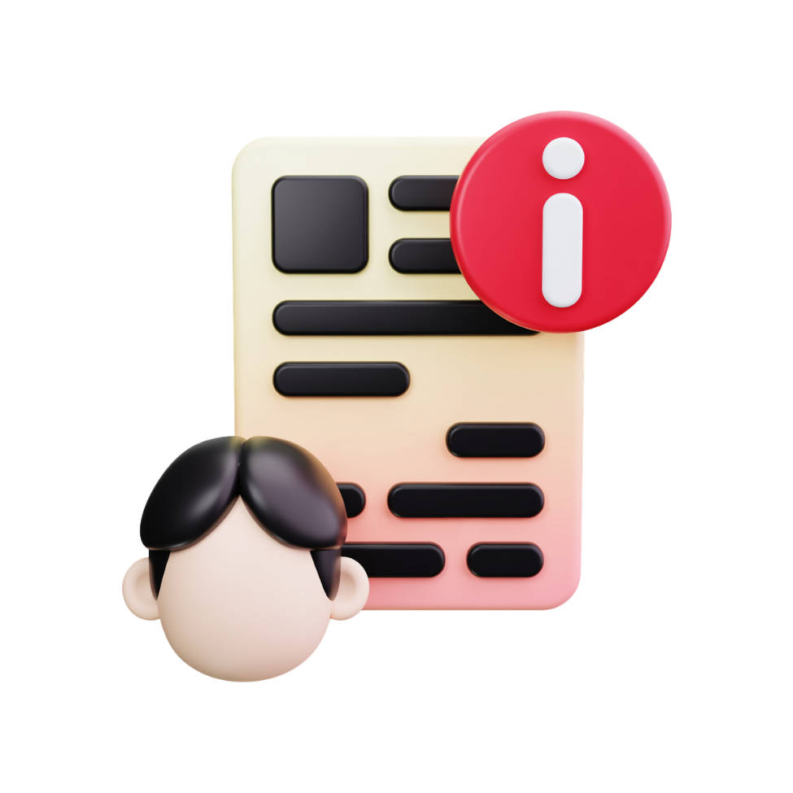
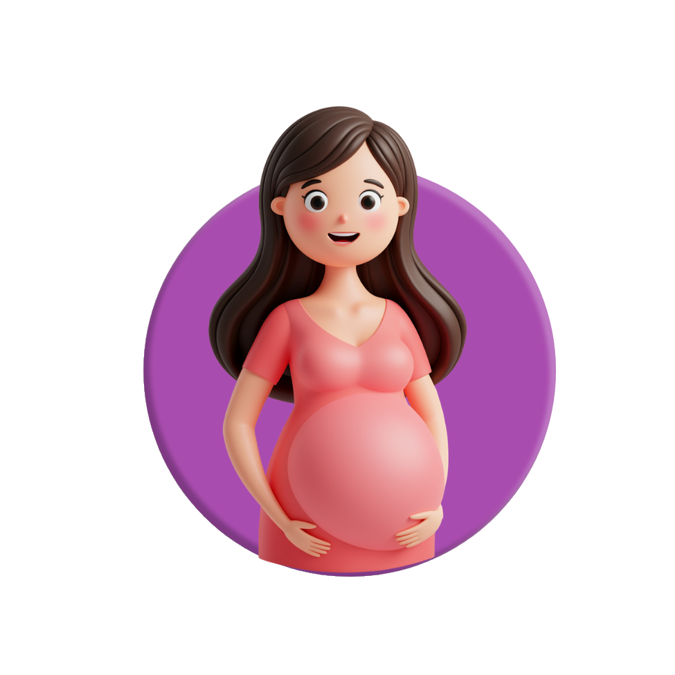

วันลา
ประเภทการลาและหลักเกณฑ์เบื้องต้นสำหรับพนักงาน
01
ลาป่วย
- แจ้งให้ผู้จัดการทราบทันทีเมื่อเจ็บป่วย
- ยื่นใบลาและใบรับรองแพทย์ในวันแรกที่กลับเข้าทำงาน
- กรณีป่วยติดต่อกัน 3 วัน ต้องมีใบรับรองแพทย์
02
ลากิจ
- ยื่นใบลาล่วงหน้า 3 วัน
- ต้องได้รับอนุมัติจากผู้จัดการ จึงจะลาได้
- ลาเกิน 7 วันทำงาน จะไม่ได้รับค่าจ้างในวันที่ลาเกิน

03
ลาคลอด
- ลาได้ไม่เกิน 120 วัน โดยนับรวมวันหยุดระหว่างการลา
- แจ้งให้ฝ่ายบุคคลทราบทันที หรือยื่นใบลาล่วงหน้า
เฉพาะพนักงานหญิง

04
ลาระดมพล
- ลาได้ตามหมายเรียก ไม่เกิน 60 วันต่อปี
- รายงานตัวพร้อมแสดงหลักฐานต่อบริษัทภายใน 3 วัน นับจากสิ้นสุดการฝึกทหาร
05
ลาพักร้อน
ใช้สิทธิได้หลังผ่านการทดลองงาน
- แจ้งล่วงหน้า 7 วัน และต้องได้รับการอนุมัติ
- กรณีเร่งด่วน อาจเรียกกลับมาช่วยงานได้ โดยนับวันลาที่เหลือไปใช้ในครั้งต่อไป
- ไม่สามารถสะสมวันลาได้ และนับตามปีปฏิทิน
- ไม่อนุญาตให้หยุดช่วงเทศกาลต่าง ๆ เว้นแต่ผู้จัดการจะเป็นผู้จัดการให้